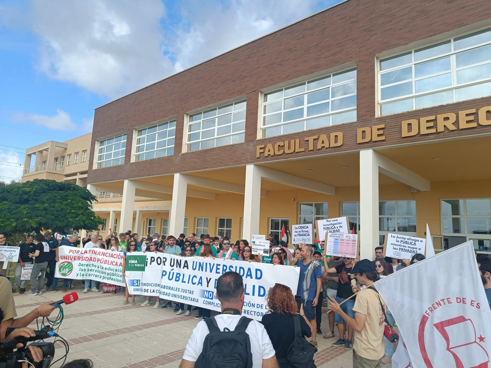
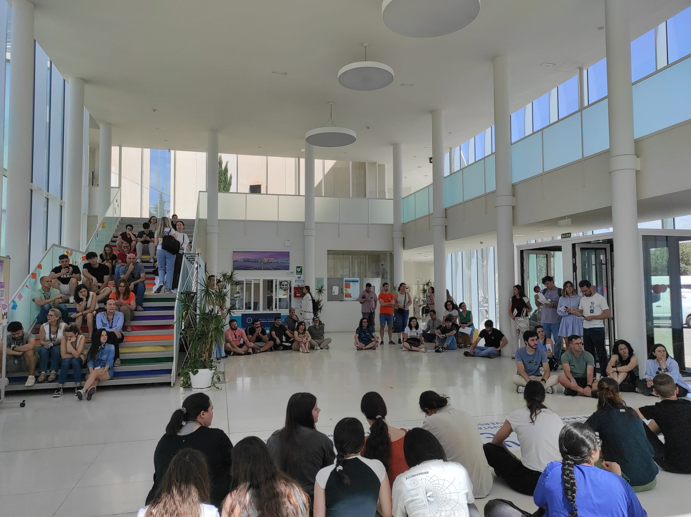
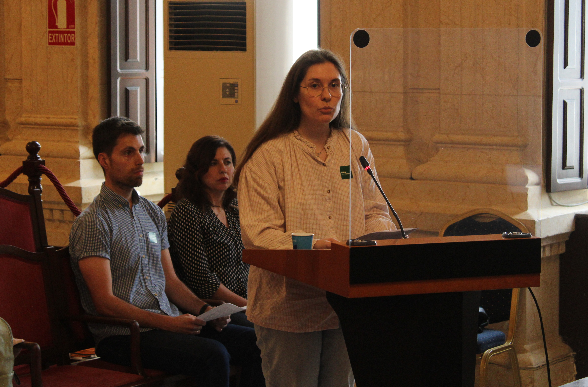
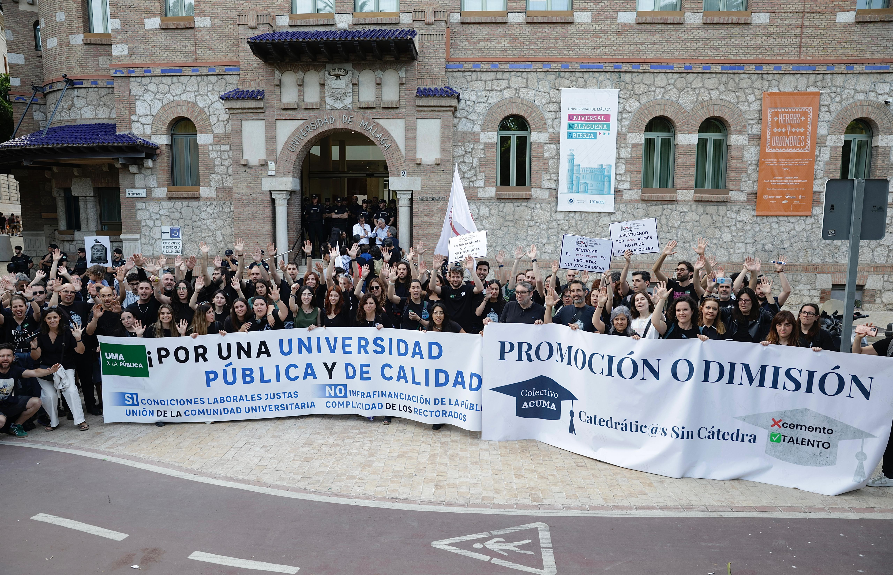
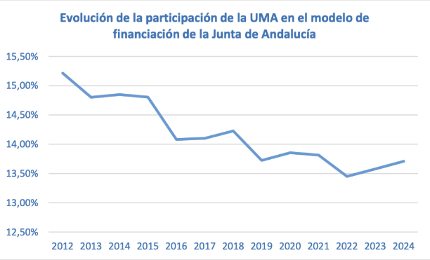
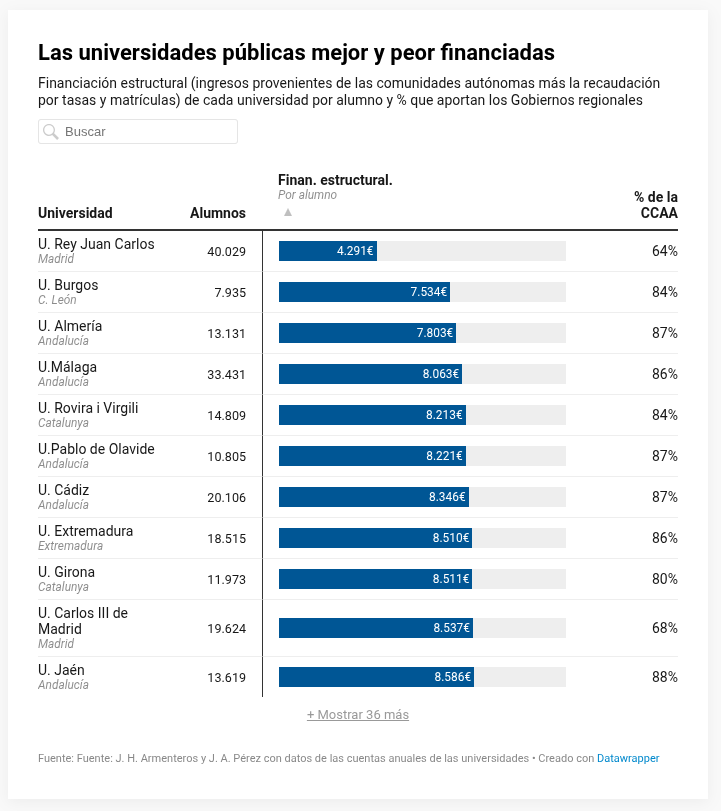
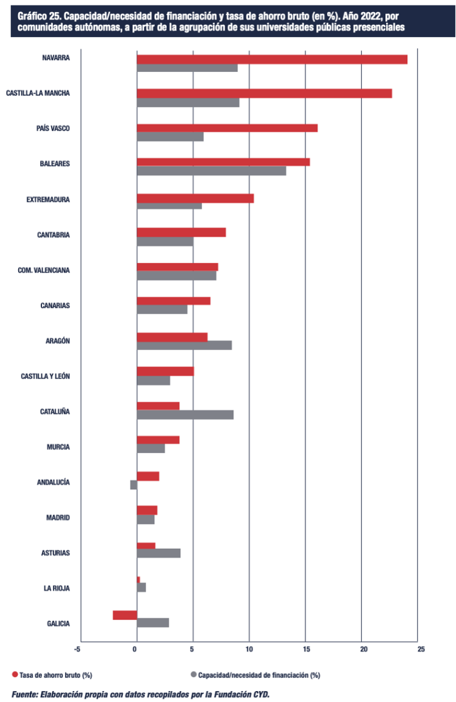
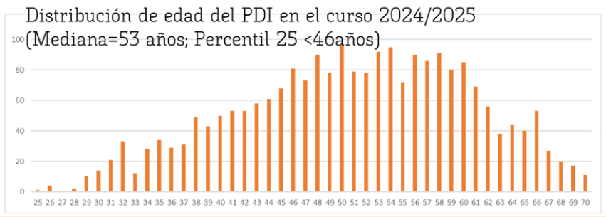
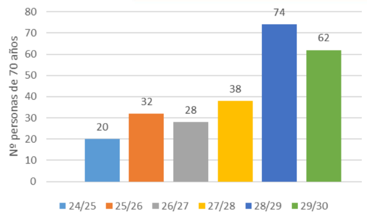

"UMA x la Pública reprocha al rector falta de valentía para defender a la universidad", VivaMálaga (25 de mayo de 2025). Leer la noticia completa
¿Quiénes somos?
La Coordinadora UMA x la Pública es una aglomeración de distintos colectivos que luchan en defensa de la universidad pública. Nuestro objetivo es garantizar una educación accesible, inclusiva y de calidad para todas las personas.
Colectivos que forman parte de la coordinadora:
PSI-UMA (Profesores Sustitutos Interinos)
CIMA (Investigadores de Málaga)
CPAD (Profesores Ayudantes Doctores)
ACUMA (Acreditados a Cátedra)
Frente de estudiantes
CEUMA (Consejo de Estudiantes de la Universidad de Málaga)
SIAM (Sindicato de Apoyo Mutuo de la Universidad de Málaga)
CCOO (Comisiones Obreras)
UGT (Unión General de Trabajadores)
¿Por qué necesitamos una universidad pública?
Equidad y ascensor social
La universidad pública es clave para la igualdad de oportunidades. Permite que el mérito pese más que el origen y que el acceso no dependa de la renta familiar. Ha sido la principal vía de progreso económico para las clases menos favorecidas en España.
Investigación e innovación
La universidad pública es el motor de la ciencia y la innovación. La financiación pública sostiene proyectos de largo plazo y riesgos que el sector privado no asume, fortaleciendo la autonomía tecnológica y científica del país.
Pensamiento crítico y diversidad
La universidad pública fomenta el pensamiento crítico y la diversidad social y cultural. Su independencia y protección institucional permiten abordar temas controvertidos y sostener áreas de conocimiento esenciales para la sociedad, más allá de la rentabilidad inmediata.
Nuestras reivindicaciones
La Universidad de Málaga, como el conjunto del sistema público universitario español, atraviesa una etapa crítica marcada por una injusta infrafinanciación por parte de la Junta de Andalucía y por una gestión institucional que da la espalda a su comunidad. Desde la Coordinadora UMA por la Pública, que agrupa a diversos colectivos y sindicatos, exigimos un cambio profundo en las condiciones laborales, académicas y sociales que garantice el futuro de una universidad verdaderamente pública, inclusiva y comprometida con la igualdad de oportunidades. La combinación del Plan de Ajuste Económico, la entrada sin control de universidades privadas en la ciudad y la pasividad del equipo rectoral, que incumple de forma sistemática su programa electoral en materia de personal, perpetúa la precariedad, la desigualdad y el deterioro del sistema universitario público. Es urgente revertir esta deriva: hay que garantizar una financiación justa que repare los recortes arrastrados desde 2012 y, sobre todo, exigir al equipo rectoral que cumpla su palabra, asuma responsabilidades y sitúe de una vez a las personas en el centro de su acción institucional.
Financiación adecuada y justa
Es necesario garantizar una financiación adecuada y justa para la UMA, que revierta la infrafinanciación histórica que arrastramos desde 2012 y asegure recursos suficientes para el desarrollo académico y la investigación. La universidad debe ser una prioridad para la Junta de Andalucía y, para el equipo que gobierna la institución, una máxima que defender continuamente.
Promoción y estabilización de la plantilla
La promoción y estabilización de la plantilla son un derecho y deben estar desvinculadas de limitaciones presupuestarias coyunturales que afectan injustamente a nuestro futuro profesional. Exigimos planes de estabilización que permitan el desarrollo de la carrera profesional para todo el personal docente e investigador (PDI), como son profesorado interino, personal investigador, asociados y ayudantes doctores, y para el personal técnico, de gestión, administración y servicios (PTGAS). Exigimos la reactivación de los procesos de promoción para los ayudantes acreditados a titular y el personal funcionario acreditado a cátedra, con un calendario claro y transparente.
Sistema retributivo justo
Reivindicamos un sistema retributivo justo que garantice el reconocimiento y pago de los complementos salariales a todo el personal docente e investigador, independientemente de la figura contractual. Rechazamos la precariedad laboral estructural que suponen las múltiples categorías contractuales, así como los retrasos en los pagos por parte de la Junta de Andalucía. Demandamos además la activación de contrataciones paralizadas y una oferta de empleo público que cubra el 100% de las jubilaciones.
Becas y ayudas para el estudiantado
Exigimos la reactivación y ampliación de becas y ayudas para nuestro estudiantado, como las del comedor, y una mejora urgente en la gestión de sustituciones del profesorado para evitar demoras de meses. Reclamamos inversión en materiales didácticos y bibliográficos, precios justos en las futuras residencias universitarias, y el reconocimiento y remuneración de todas las prácticas a cargo de la entidad beneficiaria.
Docencia e investigación
La docencia e investigación son actividades esenciales en la universidad. El equipo actual debe garantizar que se desarrollarán en las mejores condiciones de calidad y de reconocimiento en los planes anuales de trabajo del personal. Nuestro personal investigador debe tener una carrera definida al mismo nivel que el resto de universidades españolas y europeas. Se debe garantizar un marco eficiente que garantice las ayudas sociales y las actividades de transferencia de la investigación que revierten en la sociedad.
Consideramos necesaria la asunción de responsabilidad por parte del equipo rectoral, si no se revierte el incumplimiento del programa electoral que se viene produciendo de forma sistemática en materia de personal.
No queremos trabajar en condiciones precarias. Queremos trabajo digno para transferir a la sociedad el conocimiento que generamos y garantizar una educación pública, accesible y de calidad.
Documentos
Manifiesto de UMA x la Pública
Documento de Problemáticas de los Colectivos de la UMA
Noticias
Newsletters
Newsletter #1 - Julio 2025
Newsletter #2 - Septiembre 2025
Newsletter #3 - Enero 2026
Prensa
"Un despliegue policial sin precedentes en la concentración pacífica frente al Rectorado de la Universidad de Málaga", Malagaldia (16 de mayo de 2025). Leer la noticia completa
"Colectivos de la UMA denuncian "excesiva presencia policial" e "impedimento de acceso" en una protesta frente al Rectorado", MálagaHoy (16 de mayo de 2025). Leer la noticia completa
"La plataforma ‘UMA por la Pública’ señala un «despliegue policial sin precedentes» en una concentración en el rectorado", EspacioAndaluz (16 de mayo de 2025). Leer la noticia completa
"Un centenar de docentes protestan contra los recortes económicos en la UMA", 101tv (16 de mayo de 2025). Leer la noticia completa
"Profesoras de la Universidad de Málaga se concentran frente al Rectorado de la UMA", Onda Cero (16 de mayo de 2025). Leer la noticia completa
"Nueva protesta contra los recortes económicos en la UMA", Diario Sur (15 de mayo de 2025). Leer la noticia completa
"IU respalda la movilización 'UMA por la pública' y acusa a Moreno de "trabajar para las universidades privadas"", Europa Press (15 de mayo de 2025). Leer la noticia completa
"Los críticos contra los recortes en la UMA se reúnen en una plataforma", Diario Sur (13 de mayo de 2025). Leer la noticia completa
"Los docentes de la Universidad de Málaga claman contra los recortes en pleno desembarco de universidades privadas", ElDiario.es (13 de mayo de 2025). Leer la noticia completa
"Nace UMA x La Pública, la coordinadora en defensa de la Universidad", MálagaActualidad (13 de mayo de 2025). Leer la noticia completa
"El colectivo ‘UMA por la Pública’, integrado por sindicatos, asociaciones y plataformas del ámbito universitario, convoca una protesta mañana jueves 15 frente al rectorado del Parque para reclamar una universidad pública y de calidad", El Observador (13 de mayo de 2025). Leer la noticia completa
"Universidades públicas andaluzas se rebelan contra el apoyo de la Junta a las privadas", El País (2 de julio de 2025). Leer la noticia completa
"Los rectores andaluces critican que los 34 nuevos títulos para la privada están «muchos repetidos»", La Opinión de Málaga (10 de julio de 2025). Leer la noticia completa
"La plataforma contra los recortes en la Universidad de Málaga planea un calendario de protestas", Málaga Hoy (6 de septiembre de 2025). Leer la noticia completa
"La comunidad universitaria protesta por la “infrafinanciación” de la UMA", Onda Local Andalucía (19 de septiembre de 2025). Leer la noticia completa
"La UMA, a la cola de Andalucía en financiación por alumno", El Diario Sur (19 de septiembre de 2025). Leer la noticia completa
"La plataforma UMA x la pública exigirá una "financiación digna" en una protesta en el inicio oficial de curso", Málaga Hoy (22 de septiembre de 2025). Leer la noticia completa
"La comunidad universitaria convoca una protesta por la \"infrafinanciación crónica\" de la UMA", La Opinión de Málaga (22 de septiembre de 2025). Leer la noticia completa
"La UMA inicia un curso marcado por su situación económica y la llegada de universidades privadas", La Opinión de Málaga (23 de septiembre de 2025). Leer la noticia completa
"La infrafinanciación protagoniza el acto de apertura del curso, precedido de una protesta de profesores y estudiantes contra los recortes y el genocidio en Gaza", Diario Sur (23 de septiembre de 2025). Leer la noticia completa
"La coordinadora 'UMA x la Pública' se moviliza por 'una financiación digna'", El Norte de Castilla (23 de septiembre de 2025). Leer la noticia completa
"La universidad pública se moviliza contra Moreno Bonilla: precariedad, pisos imposibles y grados regalados a lo privado", El Plural (30 de septiembre de 2025). Leer la noticia completa
"La nueva ley universitaria andaluza avanza por la vía de urgencia sin el aval de los agentes socioeconómicos", Eldiario.es (3 de octubre de 2025). Leer la noticia completa
"Adelante Andalucía acusa al PP y a la Junta de "asfixiar" a la Universidad de Málaga "con un préstamo trampa"", EuropaPress (24 de octubre de 2025). Leer la noticia completa
"Por Andalucía critica las condiciones de aprobación de la nueva Ley de Universidades", TerceraInformacion (31 de octubre de 2025). Leer la noticia completa
"Teodomiro López, rector de la Universidad de Málaga: "Nuestra financiación por estudiante está 678 euros por debajo de la media autonómica"", MálagaHoy (23 de septiembre de 2025). Leer la noticia completa
"Los estudiantes de la UMA convocan cinco días de huelga para protestar por la falta de financiación", MálagaHoy (12 de noviembre de 2025). Leer la noticia completa
"Huelga en la UMA: la Junta se abre al diálogo con los estudiantes pero niega la infrafinanciación", La Opinión de Málaga (13 de noviembre de 2025). Leer la noticia completa
"El negocio de la universidad privada: el fondo de inversión dueño de la Alfonso X la vende seis años después por el doble", Eldiario.es (16 de noviembre de 2025). Leer la noticia completa
"La UAX, un negocio de mil millones de euros", Eldiario.es (18 de noviembre de 2025). Leer la noticia completa
"El consejero de Universidad niega que la UMA esté infrafinanciada", MálagaHoy (17 de noviembre de 2025). Leer la noticia completa
"Los universitarios malagueños estallan contra Moreno Bonilla y van a la huelga: "Ya basta de destrozar la pública"", ElPlural (1 de diciembre de 2025). Leer la noticia completa
"La Junta cree que la UMA necesita reforzar situación económica tras «mala gestión previa»: «Infrafinanciación no hay»", ElnoticieroDigital (1 de diciembre de 2025). Leer la noticia completa
"Los universitarios malagueños paralizan las clases cinco días en protesta por la falta de financiación y la reducción de la calidad educativa", ElPaís (1 de diciembre de 2025). Leer la noticia completa
"La huelga contra la LUPA y la infrafinanciación paraliza durante cinco días la Universidad de Málaga", ElSalto (3 de diciembre de 2025). Leer la noticia completa
"La financiación, el talón de Aquiles de la universidad en España", CadenaSer (9 de diciembre de 2025). Leer la noticia completa
"El rector de la UMA se desmarca del resto de universidades andaluzas en el rechazo al reparto de la financiación", MálagaHoy (18 de diciembre de 2025). Leer la noticia completa
"Málaga, capital de la infrafinanciación de la universidad pública andaluza", InfoLibre (19 de diciembre de 2025). Leer la noticia completa
"Claves del nuevo choque entre la Junta y las universidades públicas andaluzas que reactiva la amenaza judicial", ElDiario.es (21 de diciembre de 2025). Leer la noticia completa
"España tendrá más universidades privadas que públicas en 2026 por el impulso de las comunidades autónomas", Eldiario.es (5 de enero de 2026). Leer la noticia completa
"La Junta se prepara para dar luz verde a una ley que asfixia a las universidades públicas", El Salto (6 de febrero de 2026). Leer la noticia completa
"Los rectores universitarios advierten que la financiación mínima del 1% del PIB "no avanza al ritmo que gustaría"", Infobea (27 de marzo de 2026). Leer la noticia completa
Acciones
Participación en el pleno del Ayuntamiento 26 de marzo
El miércoles 26 de marzo, Salvador Pineda, profesor de la Universidad de Málaga y representante de UMA x la Pública, intervino en el pleno del Ayuntamiento de Málaga para defender una financiación digna de la universidad pública. En su intervención destacó que "la Universidad de Málaga es la cuarta peor financiada de España y la segunda en Andalucía", lo que se traduce en que "de cada 20 profesores que se jubilan, solo se reemplazan 3". Pineda enfatizó que "lo que está en juego no es solo la universidad, es el modelo de sociedad" y lanzó un mensaje claro: "O defendemos una universidad pública fuerte, accesible y bien financiada, o aceptamos que la educación superior vuelva a ser un privilegio". Ver video de la intervención

Concentración 23 de septiembre
El martes 23 de septiembre, con motivo de la inauguración oficial del curso universitario, UMA x la Pública convocó una concentración en defensa de una financiación digna y contra los recortes, sumándose también la denuncia por el genocidio en Gaza. La comunidad universitaria se movilizó para exigir una universidad pública de calidad y justicia social.

Asambleas 27 de mayo
El pasado martes, 27 de mayo, a las 12:00h, se celebraron asambleas simultáneas en los tres campus de la UMA para debatir sobre los recortes y las próximas movilizaciones:
- Ampliación: Facultad de CC de la Salud (Hall)
- Teatinos: Facultad de Ciencias de la Educación (Hall)
- El Ejido: Facultad de Bellas Artes (Hall)
Esta convocatoria estuvo comunicada como un paro laboral de 3 horas (11:30h a 14:30h) para facilitar la asistencia de PDI y PTGAS.

Participación en el pleno del Ayuntamiento 22 de mayo
El pasado lunes, 22 de mayo, representantes de UMA x la Pública participaron en el pleno del Ayuntamiento de Málaga para defender la universidad pública y exponer las problemáticas derivadas de los recortes. Durante la intervención, se destacó la importancia de una educación accesible y de calidad para todos.

Concentración 15 de mayo
El pasado jueves, 15 de mayo, se llevó a cabo una concentración frente al Rectorado de la UMA para protestar contra los recortes y exigir una universidad pública de calidad. La comunidad universitaria se unió para alzar su voz en defensa de sus derechos.
Datos
Infrafinanciación crónica de la UMA
Desde el año 2012, la financiación autonómica destinada a la Universidad de Málaga ha descendido de manera sistemática: del 15,2% del total del sistema universitario andaluz en 2012 al 13,8% en 2024, a pesar de que la UMA ha mantenido un porcentaje de estudiantes estable en torno al 15,1%. Esta bajada no responde a criterios objetivos de actividad ni resultados, y ha generado una infrafinanciación acumulada de 216,5 millones de euros desde 2013.
Solo en 2025, la UMA habría recibido 21,2 millones de euros adicionales si se hubiese mantenido el porcentaje de financiación de 2012. Estos datos se han extraído de los informes anuales de la Fundación CYD.
Según el artículo de Eldiario.es del 6 de julio de 2025, la UMA es la cuarta universidad pública peor financiada de España.
Además, Andalucía es la única comunidad autónoma con una capacidad de financiación negativa y una tasa de ahorro bruta prácticamente nula, según el informe de la Fundación CYD del año 2024.



Estrangulamiento presupuestario y presión sobre el gasto en personal
En 2024, la Junta de Andalucía asignó a la Universidad de Málaga un crédito de 214,5 millones de euros. Sin embargo, el gasto real en nóminas ascendió a 226 millones, generando un déficit de 11,5 millones.
De cara a 2025, y con el incremento del 2,5% en los salarios públicos, se prevé que el gasto en personal alcance los 233,7 millones de euros, frente a un crédito inicial de solo 221,6 millones, lo que supone un nuevo déficit estimado de 12,1 millones.
Esta situación se ve agravada por el envejecimiento de la plantilla: la mediana de edad del profesorado se sitúa en los 53 años y se prevén más de 250 jubilaciones entre 2025 y 2030. Sin una tasa de reposición adecuada, resulta inviable garantizar el relevo generacional necesario para sostener la calidad académica.


Plan de Ajuste: recortes estructurales y medidas de emergencia
Para poder hacer frente mínimamente a sus obligaciones básicas, la Universidad de Málaga se ha visto forzada a aceptar un préstamo de 48,5 millones de euros a la Junta de Andalucía, con un plan de amortización a 21 años y al 1% de interés. Esta operación ha venido acompañada de un Plan de Ajuste drástico, cuyas medidas afectan gravemente al normal funcionamiento académico e investigador de la institución.
Entre las principales restricciones impuestas destacan:
- Tasas de reposición extremadamente limitadas: 15% para el Personal Docente e Investigador (PDI) en 2025 y 2026, y solo un 20% en 2027.
- Recorte de contrataciones en el Personal Técnico, de Gestión y de Administración y Servicios (PTGAS), limitado al 30% de reposición.
- Aumento de la carga docente por profesor, supresión de reducciones por edad y drástica limitación de nuevas plazas: en 2025/26 solo se convocarán 7 plazas y se calcula que habrá aproximadamente 50 jubilaciones.
- Eliminación de contrataciones por bajas temporales y restricciones al reconocimiento de tareas de investigación y gestión.
Estas medidas son claramente insostenibles y ponen en riesgo tanto la calidad como la continuidad de las funciones esenciales de la universidad. A ello se suma que la Junta de Andalucía en el año 2020 tomó 36 millones de euros del remanente de la Universidad de Málaga para los Fondos COVID. Este superávit que tenía la institución estaba destinado a obras ya licitadas. Por lo tanto, la Junta se ha quedado con fondos de la UMA que luego incorpora en formato de préstamo con intereses.
Esta actuación compromete gravemente la capacidad de inversión y desarrollo estratégico de la universidad.
Impacto de los recortes en el estudiantado, la docencia, la investigación y la transferencia
Las medidas de ajuste impuestas a la Universidad de Málaga no solo afectan a su estructura interna, sino que tienen un impacto directo en la calidad del servicio que presta a su estudiantado y a la sociedad. La reducción de recursos compromete la planificación docente, impide la cobertura ágil de bajas, limita la creación de nuevas plazas y dificulta la oferta de prácticas remuneradas, la dotación de los laboratorios, residencias asequibles y becas suficientes, poniendo en riesgo la igualdad de oportunidades.
Al mismo tiempo, se ven mermadas la estabilidad, la proyección profesional y la internacionalización del personal docente e investigador, dificultando el desarrollo de una carrera académica digna y sostenible. Esto repercute negativamente en la calidad de la enseñanza, la generación de conocimiento y la capacidad de transferencia hacia el entorno social y productivo.
Sin una inversión adecuada, la universidad no podrá seguir cumpliendo su misión como espacio de formación, investigación crítica y transformación social.
Contacto y Participación
¿Quieres colaborar, hacer sugerencias o ponerte en contacto con la coordinadora? Rellena el siguiente formulario:
También puedes escribirnos directamente a nuestro correo electrónico:
Síguenos también en Instagram: